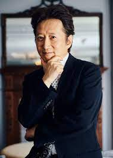
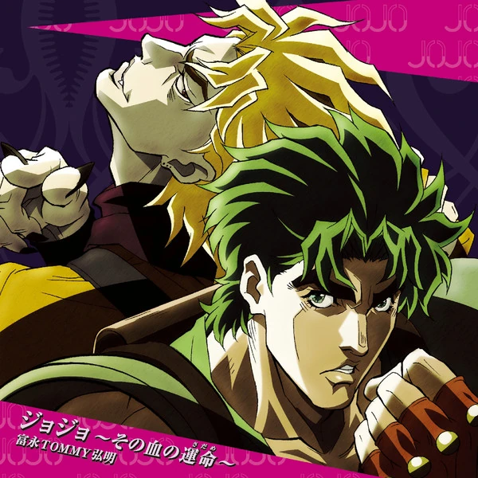
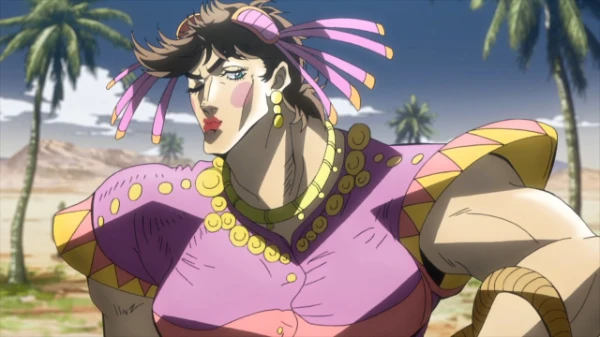
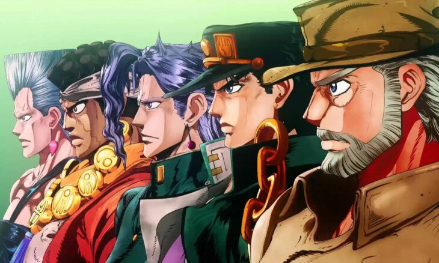
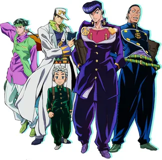
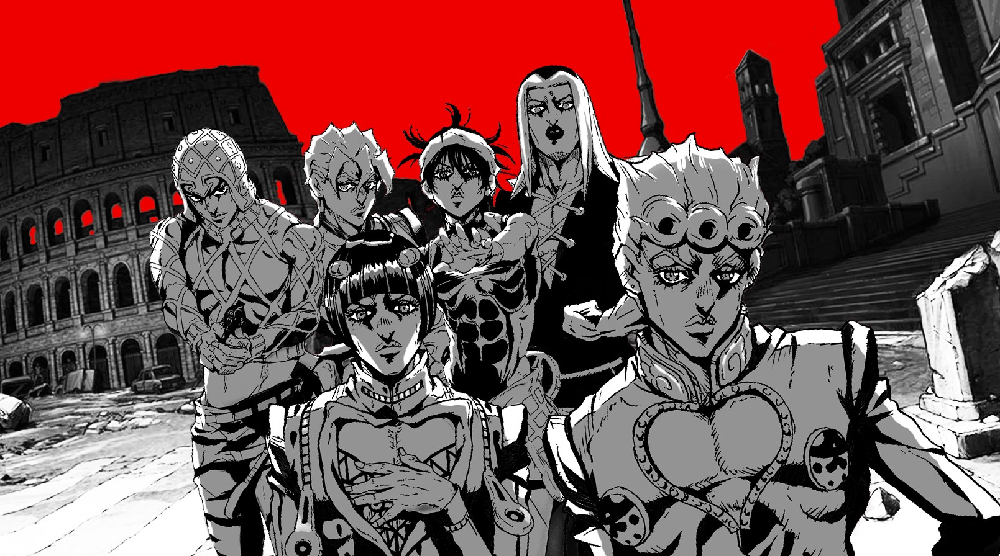

Что такое Джо Джо?
JoJo's Bizarre Adventure — серия выпусков манги, автором и иллюстратором которой является Хирохико Араки. С 1987 по 2004 год серия публиковалась в журнале Weekly Shonen Jump, затем выпуск глав был перенесён в ежемесячный сэйнэн-журнал Ultra Jump. JoJo’s Bizarre Adventure является второй в числе крупнейших серий манги издательства Shueisha и включает в себя 135 томов, уступая лишь Kochikame, состоящей из 200 томов. История девяти частей манги разворачивается вокруг приключений Джонатана Джостара и его потомков: каждая часть представляет читателю отдельную историю и нового героя, способного применять в бою сверхъестественные способности. В манге также описаны события, происходящие в параллельной вселенной мира ДжоДжо — 7, 8 и 9 части. Но здесь я повествую только о 3 превых частях, так как, по-моему, они сильно отличаются от других
Создатель
Хирохико Араки (род. 7 июня 1960 года), настоящее имя Тосиюки Араки — японский мангака
Полная информацияЧасть первая "Phantom Blood"
Создание:
В манге всего в первой части 5 томов,выходила с с 10 августа 87 до 10 августа 88. В аниме это заняло 9 серий, вышли они 30 января по 27 сентября 2013 года, до него ещё выходила OVA в 2007 году, но зрителям она не очень приглянулась
Сюжет:
Действие происходит в Великобритании во второй половине XIX века. Дарио Брандо находит разбитую повозку богатого человека и выдаёт себя за спасителя. В знак благодарности Джордж Джостар позже принимает в семью сына вора — Дио Брандо, который с первой встречи невзлюбил Джонатана, сына Джорджа, и решает всеми способами испортить ему жизнь, для чего прибегает к самым подлым методам. Однако Джонатан не падает духом. Проходит 7 лет; отец смертельно заболевает, но выясняется, что на самом деле Дио, желающий получить наследство, подсыпал отчиму яд. Джонатан раскрывает преступление и нападает на Дио. Тот решает испытать на себе таинственную маску, которая превращает его в вампира. Поместье сожжено дотла, Джонатан отправляется в путешествие и встречается с Уиллом Цеппели, который обучает главного героя технике «Хамон», с помощью которой можно победить нежить, а также Робертом Спидвагоном, бывшим разбойником. Так Джонатан, находя новых союзников, начинает борьбу против Дио и его новых слуг-мертвецов. Дио сначала обращает Джека Потрошителя, а затем давно умерших рыцарей Таркуса и Бруфорда.
Персонажи:
Джонатан Джостар - главный герой (настоящий джентельмен)
Дио Брандо - главный злодей (нехороший "человек")
Эрина Джостар - жена главного героя (крутая женщина)
Уилл Антонио Цеппели - учитель Джонатана (цыган)
Роберт Спидвагон - лучший друг гг (в народе их называют Джобро)
 ПодробноЧасть вторая "Battle Tendency"
Создание:
Вторая часть франшизы JoJo's Bizarre Adventure, состоящая из 69 глав, которые выпускались в журнале Weekly Shōnen Jump с 1987 по 1989 год. Позже манга была собрана в 7 томов. Действие манги происходит после Phantom Blood и до Stardust Crusaders. В 2012 году по мотивам манги был выпущен аниме-сериал, который выпускался по японскому телеканалу с 5 октября 2012 года по 5 апреля 2013 года.
Сюжет:
1938 год. Во время экспедиции нацистов в Мексике в ацтекских руинах было обнаружено множество «вампирских масок», способных обращать людей в вампиров, а также окаменелый человек, «вмурованный» в колонну. Действие переносится в Нью-Йорк. Лабораторию обнаруживает уже постаревший Спидвагон, и он оказывается схваченным. Его отправляется искать Джозеф Джостар, внук Джонатана, и, обнаружив лабораторию, видит в них «Людей-из-колонны», которых нацисты пробуждают с помощью крови узников. Пробуждённое существо убивает всех работников лаборатории, однако терпит поражение от Джозефа. Тем временем пробуждаются ещё три древних Человека-из-колонн, которые намереваются найти древний «красный камень Эйши» для того, чтобы стать совершенными существами и вернуть господство над человечеством. Джозефу предстоит сражаться против них, а также познакомиться со своей матерью, которая, как думал Джозеф, уже давно умерла.
Персонажи:
Джозеф Джостар - главный герой (внук Джонатана, сын ДжорДжа 2)
Карс - главный злодей (Бог)
Сьюзи Кью - девушка главного героя ( ещё более крутая женщина)
Лиза Лиза - учитель Джозефа (тоже очень крутая женщина)
Цезарь Цеппели - Джобро
 ПодробноЧасть третья "Stardust Crusaders"
Создание:
Третья часть франшизы манги JoJo's Bizarre Adventure. Серии публиковались в журнале Weekly Shonen Jump с 1989 по 1992 года. Всего было выпущено 152 главы манги, которые были собраны в 16 томов. Сюжет Stardust Crusaders происходит после Battle Tendency и предшествует Diamond Is Unbreakable. Изначально манга была известна как JoJo's Bizarre Adventure Part 3 Jotaro Kujo: Heritage for the FutureStardust Crusaders является самой знаковой частью франшизы JoJo's Bizarre Adventure во многом благодаря тому, что в ней впервые появляются стенды, которые стали неотъемлемой частью вселенной Jojo. По мотивам сюжета манги были созданы 2 видеоигры, OVA-сериал, CD-драма и аниме-адаптация в виде двух сериалов, серии которых транслировались в Японии с апреля 2014 года по июнь 2015 года.
Сюжет:
Действие происходит с 1987/1988 по 1988/1989 год. Моряки вытаскивают гроб с телом Дио Брандо, покоившегося почти 100 лет, со дна Атлантического океана. Он оживает и убивает моряков. Становится ясно, что Дио сумел захватить тело Джонатана, которым заменил своё, ранее уничтоженное. По этой причине у всех потомков Джонатана пробуждаются «стенды» — существа, являющиеся воплощением духовной сущности, воли человека и обладающие разными способностями. Их получают Джозеф Джостар, его дочь Холли Куджо и внук Джотаро Куджо. Холли, однако, не может справиться со своей новой силой и начинает медленно умирать, по прогнозам врачей она должна умереть примерно через 50 дней. Единственный способ спасти Холли — убить Дио до истечения данного срока. Постаревший Джозеф ищет помощи у своего внука Дзётаро, чтобы вместе с ним отправиться в Египет и как можно скорее убить Дио. К ним присоединяются Мохаммед Абдул, Нориаки Какёин, Жан-Пьер Польнарефф и собака Игги. Вместе они сражаются против Дио и его подчинённых, путешествуя по странам Южной Азии и Ближнего Востока, таким как Сингапур, Индия, Пакистан, Саудовская Аравия и Египет.
Персонажи:
Джотаро Куджо - главный герой (17тилетний японский школьник). Стенд - Star Platinum
Дио Брандо - главный злодей (вообще нечто). Стенд - The World
Жан-Пьер Польнарефф - Джобро (француз). Стенд - Silver Chariot
Джозеф Джостар - дед Джотаро ( уже старый ). Стенд - Purple Hermit
Нориаки Какёин - Джобро (тоже школьник). Стенд - Hierophant Green
Мохаммед Абдул - Джобро (Колдун). Стенд - Magician’s Red
Игги - Джобро (пёс). Стенд - The Fool
 ПодробноЧасть четвёртая "Diamond Is Unbreakable"
Создание:
Четвёртая часть франшизы манги JoJo's Bizarre Adventure. Серии публиковались в журнале Weekly Shonen Jump с 1992 по 1995 год. Всего были выпущены 174 главы, собранные затем в 18 томов манги. Действие сюжета происходит после Stardust Crusaders и предшествует Vento Aureo. Изначально манга была известна, как JoJo's Bizarre Adventure Part 4: Jōsuke Higashikata По мотивам манги в 2016 году был выпущен аниме-сериал, состоящий из 39 серий, а также к выходу 4 августа 2017 года вышел полнометражный фильм с участием живых актёров.
Сюжет:
Действие происходит в Японии 1999 года, в вымышленном городе Морио, где живёт Джосукэ Хигашиката, внебрачный сын Джозефа. С ним связывается Джотаро Куджо, ближний родственник, чтобы известить о наличии наследства, которое Джосукэ может получить от своего отца. Сам Джосукэ владеет стендом и долгое время думал, что является единственным носителем подобной силы. Он расправляется с первым противником со стендом — Анджело, но узнаёт от него, что в городе есть владелец волшебных артефактов — лука и стрелы, которые, пронзая человека, наделяют его силой стенда. Дзёсукэ быстро находит их владельцев, и им оказываются братья Кэйтё и Окуясу. Создавая новых владельцев стендами, они надеялись убить своего отца, однако Кэйтё убивает стенд Red Hot Chili Pepper, принадлежащий Акире Отоиси, и крадёт лук со стрелой. Окуясу решает следовать за Дзёсукэ. Главные герои снова пытаются найти нового владельца лука и стрелы, чтобы избежать появления новых владельцев стендов. Во второй части манги Джосукэ и его союзники пытаются найти и расправиться с серийным убийцей по имени Йошикаге Кира, который убивает женщин, чтобы потом ухаживать за их отрубленными руками
Персонажи:
Джотаро Куджо - племяник главного героя. Стенд - Star Platinum
Кира Йошикаге - главный злодей (вообще нечто). Стенд - Killer Queen
Кишибе Рохан - знаменитый мангака. Стенд - Heaven’s Door
Джосукэ Хигашиката - главный герой . Стенд - Crazy Diamond
Окуясу Нидзимура - Джобро (тоже школьник). Стенд - The Hand
Коичи Хироше - Джобро (мелкий крутой парень). Стенд - Echoes
 ПодробноЧасть пятая "Golden Wind"
Создание:
Пятая часть манги JoJo's Bizarre Adventure. Главы публиковались в журнале Weekly Shonen Jump с 28 ноября 1995-го по 23 марта 1999 года. Всего было выпущено 155 глав, собранных затем в 17 томов манги. Действие сюжета происходит после событий Diamond Is Unbreakable и предшествует Stone Ocean. По мотивам манги в 2002 году была выпущена видеоигра GioGio's Bizarre Adventure для игровой приставки PlayStation 2. Также в 2018 году студия David Production начала выпуск серий одноимённого аниме сериала, закончив на 39 серии
Сюжет:
Действие происходит в Италии в 2001 году. Джотаро Куджо отправляет в Неаполь Коичи Хироше, которому поручено разыскать некоего Харуно Сиобану и заполучить образец его кожи для генетического исследования в фонде «Спидвагон». Сиобана оказывается никем иным, как Джорно Джованной, одним из внебрачных сыновей Дио (который зачал сына, уже владея телом Джонатана Джостара; таким образом, Джорно также стал потомком Джостаров). Представляясь таксистом, Джорно предлагает отвезти Коичи в город, однако, сложив багаж в салон автомобиля, уносится прочь. Коичи останавливает попытку грабежа при помощи своего стeнда, Echoes. К удивлению Коичи, Джорно тоже обладает стeндом — Gold Experience, который позволяет ему наделять жизнью неодушевленные предметы. Далее сюжет манги следует за приключениями Джорно, который ставит своей целью стать боссом неаполитанской мафии и избавить город от разрушительной торговли наркотиками. Вскоре он вступает во влиятельную банду «Пассионе» (рус. страсть), членами которой являются другие обладатели стендов. Пройдя зловещую инициацию, Джорно попадает в отряд Бруно Буччарати, вместе с которым вскоре получает задание от таинственного босса «Пассионе» — доставить в безопасность его единственную дочь, Уну Триш, за которой охотятся и другие отряды банды, намеревающиеся раскрыть тайну личности босса и захватить власть в «Пассионе».
Персонажи:
Джорно Джованна - гг ( внебрачный сын Дио). Стенд - Gold Experience
Дьяволо - главный злодей (вообще нечто). Стенд - King Crimson
Бруно Буччиллати - Джобро. Стенд - Sticky Fingers
Наранча Гирга - Джобро . Стенд - Aerosmith
Панакота Фуго - Джобро . Стенд - Purple Haze
Миста Гвинда - Джобро . Стенд - Sex Pistols
Леон Аббакио - Джобро . Стенд - Moody Blues
 Подробно